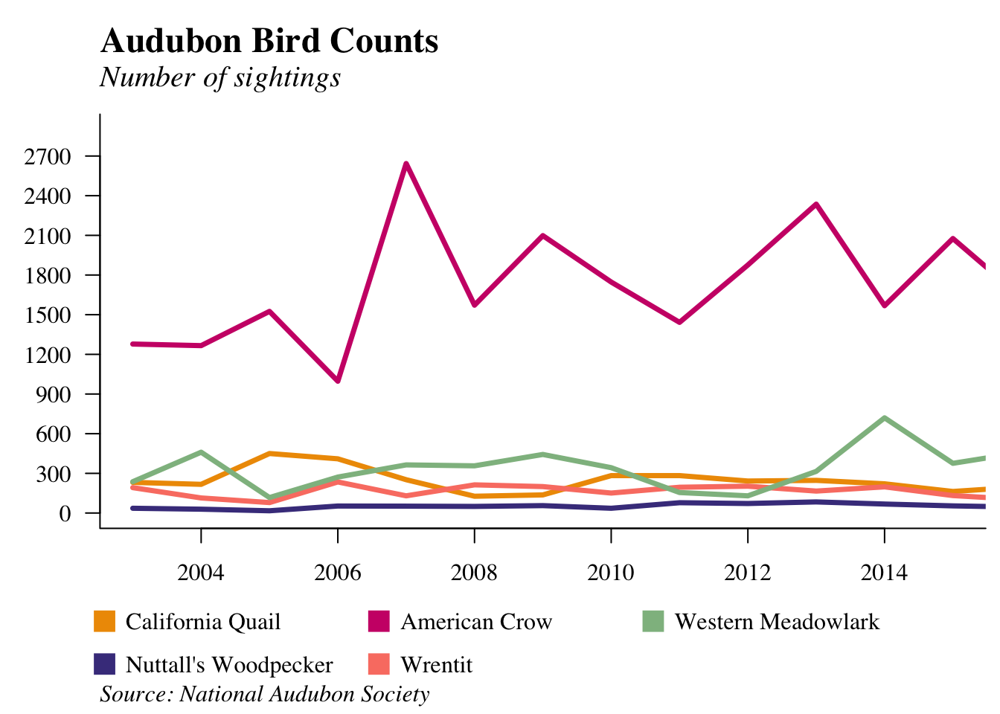
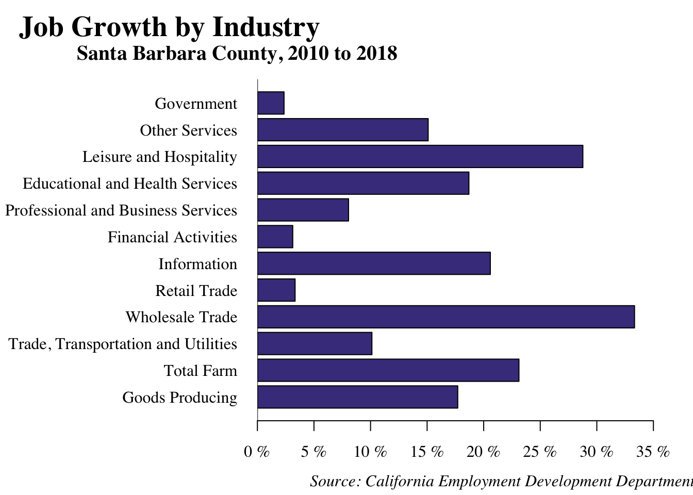

Economic
Standard of Living
SOUTH COAST HOUSEHOLD INCOME INCREASES
What is the measure?
This data consists of money income – exclusive of certain money receipts such as capital gains – before payment of personal income taxes, Social Security, union dues, Medicare deductions and the like. It excludes non-cash benefits such as food stamps or health benefits. The data is adjusted for inflation.
Why is it important?
This is the best measure of income in the context of the standard of living for households because it controls for changes in household size. It measures the ability of families to make necessary and discretionary expenditures on goods and services.
How are we doing?
The median household income in North County decreased slightly in 2016, falling from $63,887 to $63,694. This was a slight decline that came after a 5 percent increase in household income from 2014 to 2015. South County household income has continued to rise to $78,076, increasing 4.15 percent over the last year.
REAL AVERAGE SALARY PER WORKER RISES SLIGHTLY

What is the measure?
Real Average Salary is computed by summing total wages and salaries paid to all workers in the County, and then dividing by the total number of wage- and salary-earning employees. This is a countywide measure and is adjusted for inflation.
Why is it important?
While real median family income includes all residents and all sources of income, the real average wage per worker measures wages or salaries only. It is a better indicator of the health of local companies and the economic well-being of workers.
How are we doing?
The real average salary per worker increased slightly from last year’s level. It rose from $49,488 to $49,907 in 2016. This is a 4.51 percent increase from the average salary in 2009.
Job Quality and Quantity
GROWTH IN THREE SECTORS
What is the measure?
Employment in Santa Barbara County, sorted by Industry Grouping in 2010 and 2015. This data was formulated by the UCSB Economic Forecast Project, using California Employment Development Department (EDD) data.
Why is it important?
Shifts in the type of employment and associated wages can impact the real average worker’s salary and either enhance or constrain career opportunities for the local workforce.
How are we doing?
Since 2010, Santa Barbara County has experienced significant growth in the information (29 percent), leisure and hospitality (21 percent), and wholesale trade (20 percent) sectors. No sectors have experienced a decrease in employment since 2010. However, the financial activities secotor, which accounts for 3 percent of total employment in 2015, has seen no growth in employment since 2010.
AVERAGE SALARIES IN SANTA BARBARA COUNTY
What is the measure?
Average salary by industry in Santa Barbara County is compared for 2010 and 2015. These two snapshots of Santa Barbara County average salary data, sorted by industry, are derived from California Employment Development Department data sources. This measure is inflation-adjusted and presented in 2009 dollars.
Why is it important?
While a number of factors contribute to quality employment – such as job satisfaction, the quality of the workplace and co-workers – the level of pay is an important aspect of job quality and the easiest to measure.
How are we doing?
Average salaries in most sectors in Santa Barbara County have been on the rise since 2010. The sectors with the largest growth in average salaries are information (35 percent), agriculture (25 percent), and financial activities (10 percent). The only industry that declined was education and health services (a less than 1 percent loss).
JOB AND POPULATION GROWTH RATES VARY
What is the measure?
These indicators measure the difference between the the job growth rate and the population growth rate for both North County and South Coast.
Why is it important?
When the rate of job creation exceeds the rate of population growth, with no change in labor force participation, the net result is a reduction in unemployment. Job creation reflects economic expansion and the health of local firms and is a measure of the vitality of the local economy. Job creation and population growth also puts pressure on the housing market and may lead to longer commute, perhaps from outside the region.
How are we doing?
Job growth trends often mirror population growth trends. While South Coast patterns tend to be somewhat correlated, a large discrepancy in population and employment trends has not been seen in recent years. In 2015, the job growth exceeded population growth. For North County, job growth has exceeded population growth recently.

WHOLESALE TRADE SECTOR SEES MOST GROWTH

What is the measure?
Job growth by industry from 2010 to 2018 in Santa Barbara County. Employment figures are derived from the UCSB Economic Forecast Project using data from the California Employment Development Department.
Why is it important?
While job creation is generally indicative of a healthy economy, growth can occur in only a few industries while others stagnate or decline. The job growth rate by industry reflects changes in employment patterns over time. It provides some insight into changes in economic diversity in Santa Barbara County.
How are we doing?
Most industries in Santa Barbara County experienced job growth between the years of 2010 and 2018. The wholesale trade sector showed the most growth (33 percent) in the last eight years. The governement sector has had the least growth in employment since 2010.
GOVERNMENT-TO-POPULATION RATIO STABLE

What is the measure?
The ratio of federal, state, and local government workers per 1,000 Santa Barbara County residents.
Why is it important?
The public sector plays a central role in our society, providing important services such as police, fire, and environmental protection, education and social services. An increase in the proportion of government workers in the population may be seen by some as negative –signaling higher taxes, a constraining regulatory environment and a cumbersome bureaucracy. For others, the same measurement may indicate an improvement in public services.
How are we doing?
In 2015, there were approximately 87.4 government workers per 1,000 residents. This data includes employees in the education sector, which represents a large majority of these employment numbers.
Housing Affordability
SANTA BARBARA COUNTY HAS LEAST AFFORDABLE HOUSING
What is the measure?
This measure is an estimate of the percentage of households that can afford to own a median-priced home. This index uses data from the California Association of Realtors, and uses a different methodology in estimating affordability. We have chosen to highlight affordability indices between neighboring counties, California, and the United States.
Why is it important?
Comparing this index with those of other counties, the state, and the nation provides some sense of just how different the Santa Barbara County housing market is from Ventura County, San Luis Obispo County, the state as a whole, and the United States.
How are we doing?
Almost without exception, Santa Barbara County has had the least affordable housing of the regions shown for the last ten years. Affordability in 2016 has followed this trend with only 20 percent of households able to afford a median-priced home. The 2010 spike up in affordability was a result of the large decline in housing prices just after the Great Recession.
RENTAL RATES EXPERIENCE SLOW GROWTH, BUT CONTINUE TO REMAIN HIGH

What is the measure?
Average apartment rental rates in Goleta Valley, Isla Vista, Carpinteria, and Santa Barbara City market areas, as well as the South Coast as a whole. Including, the percentages at which rents are increasing based on survey estimates. The values are not adjusted for inflation.
Why is it important?
Similar to the housing affordability index, the cost of renting apartments is a major component of the cost of living in Santa Barbara County. The percentage change in apartment rental rates can be compared against measures of family income to determine if wages are keeping pace with rising rents.
How are we doing?
Rental rates throughout the South Coast rose slightly at 0.1 percent from October 2015 to April 2016, which is a sharp decrease from the 2.8 percent growth rate six months before. With the exception of Goleta Valley Market Area, all regions showed an increase in rents from October 2015 to April 2016. However, Goleta Valley Market Area remains with the highest average rental rate at $2005 per month. While most of the average rents in the South Coast are increasing, the year over year growth has slowed significantly from April 2015 to April 2016, respectively.
Business Vitality
TOTAL AVAILABLE SPACE INCREASES SLIGHTLY AS GROSS LEASE RATES REACH RECORD HIGHS

What is the measure?
Available space for office, industrial, and retail space. The data are updated twice a year through a survey of all listed properties from conventionally advertised sources, including brokers’ offices.
Why is it important?
The direction of available commercial space reflects the overall business climate and rate of commercial development. Inadequate space coupled with higher costs of leasing may act as a constraint on economic expansion.
How are we doing?
In 2016, vacant office space increased to 646,000 square feet after two years of decline, which still remains only 66 percent of 2010 levels. Industrial vacancies decreased 19 percent from the prior year to 212,000 square feet. Retail space available grew slightly to 163,000 square feet, but still follows a declining trend. In 2016, the gross lease rates for each type of space increased. The high demands for office space has alowed the rates to rise to $2.44 per square foot, which is the highest it’s been for the past decade. Similarily, gross lease rates for the industrial and retail space also reached record highs in 2016, at $1.63 and $3.97 per square foot, respectively.